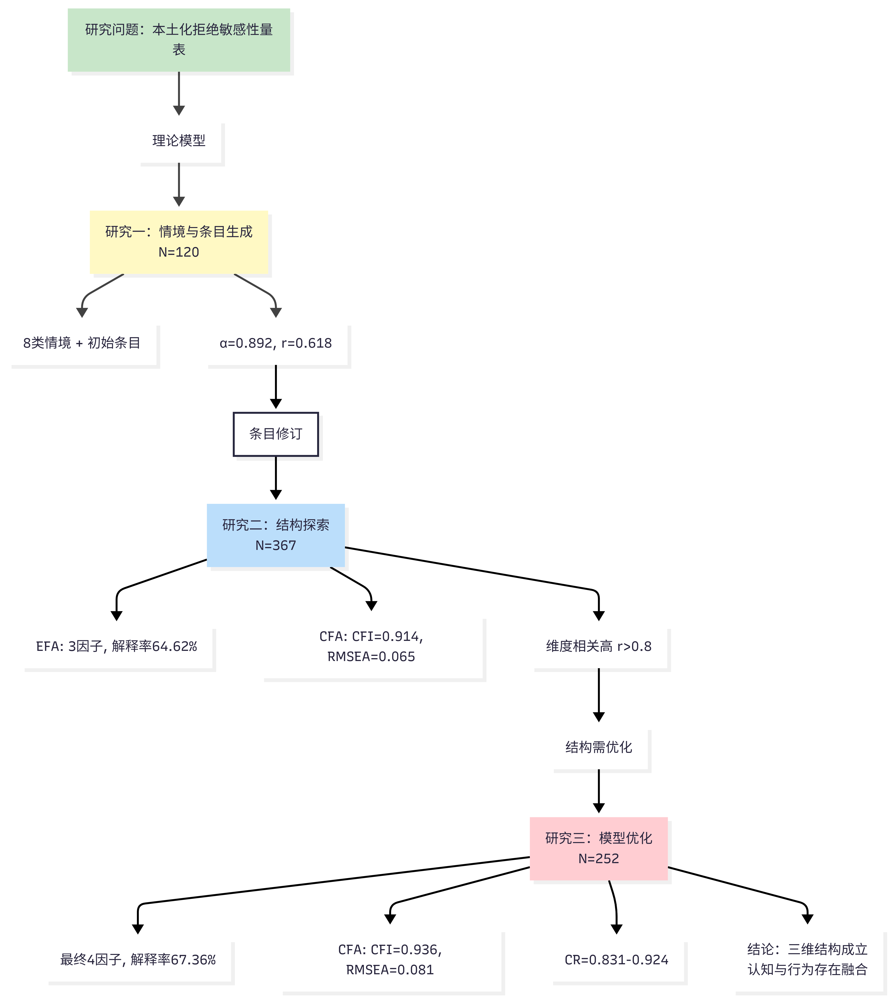
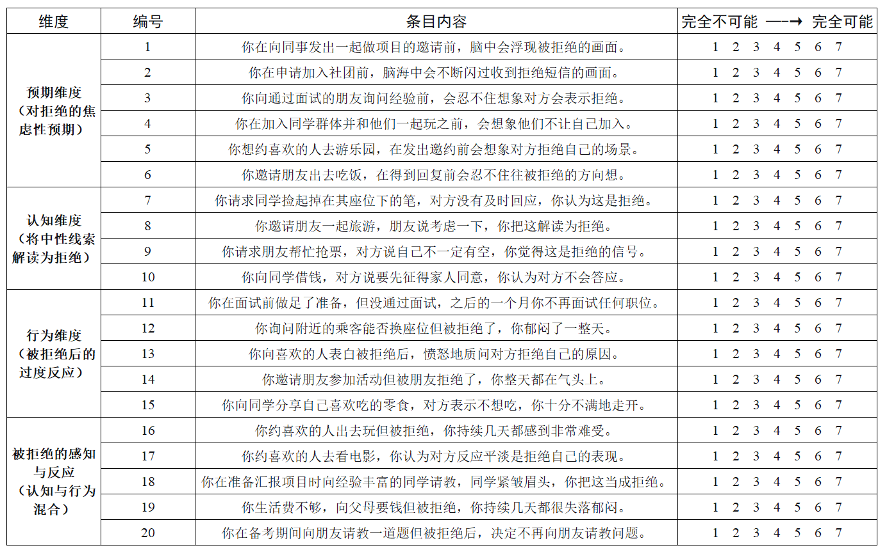

本研究基于三维过程模型（预期焦虑、感知敏感、情绪反应）编制多维度拒绝敏感性量表。通过三阶段研究（N=120、367、252），构建了包含36个项目的量表，具有良好的信效度。ESEM分析揭示维度间存在显著重叠，表明拒绝敏感性是一个整合的心理过程而非独立成分。
本研究关注如何在中国文化背景下，对拒绝敏感性进行更精细的结构化测量。现有量表多采用单一得分方式，难以区分个体在被拒绝前的预期、情境中的认知加工以及被拒绝后的行为反应，同时缺乏对中国人际情境的覆盖。因此，本研究尝试构建一个能够区分不同心理过程、且具有本土情境基础的测量工具。
研究基于拒绝敏感性的三维过程模型，将其理解为一个连续的心理加工系统：个体在互动前形成被拒绝的预期，在互动中对模糊线索进行消极解读，并在确认拒绝后产生行为反应。这一过程具有循环特征，即行为反应会进一步强化原有预期。在实际数据中，不同维度之间存在较高相关，提示这些心理过程在经验层面并非完全独立。

研究1（N=120）：项目生成与初步筛选
研究2（N=367）：探索性因素分析（EFA）
研究3（N=252）：验证性因素分析（CFA）与探索性结构方程模型（ESEM）
采用7点评分量表（1=完全不符合，7=完全符合），要求被试对人际情境中的拒绝敏感性进行自我评估。

量表涵盖12个人际情境（家庭、恋爱、友谊、学业），共36个项目，测量三个维度：预期焦虑（12题）、感知敏感（12题）、情绪反应（12题）。
EFA结果显示清晰的三因素结构，累计解释67.36%的总方差。CFA验证模型拟合良好：χ²/df=2.628, CFI=0.936, TLI=0.931, RMSEA=0.081, SRMR=0.054。
但ESEM分析揭示维度间存在显著交叉负荷（相关系数0.70-0.85），表明三个心理过程在实际体验中高度整合，而非独立运作。
量表具有良好的内部一致性：总量表α=0.951，预期焦虑CR=0.924，感知敏感CR=0.911，情绪反应CR=0.831。重测信度（间隔4周）r=0.847, p<.001。
效标效度：与抑郁（r=0.58）、焦虑（r=0.62）显著正相关，与自尊（r=-0.51）显著负相关，均p<.001。区分效度：能有效区分高低拒绝敏感性群体（Cohen's d=1.23）。
本研究成功编制了适用于中国文化情境的多维度拒绝敏感性量表。虽然量表区分了三个理论维度，但ESEM分析揭示这些维度在实际测量中呈现显著重叠，提示拒绝敏感性是一个整合的心理过程而非独立成分。这一发现对理解拒绝敏感性的本质及设计干预策略具有重要意义。